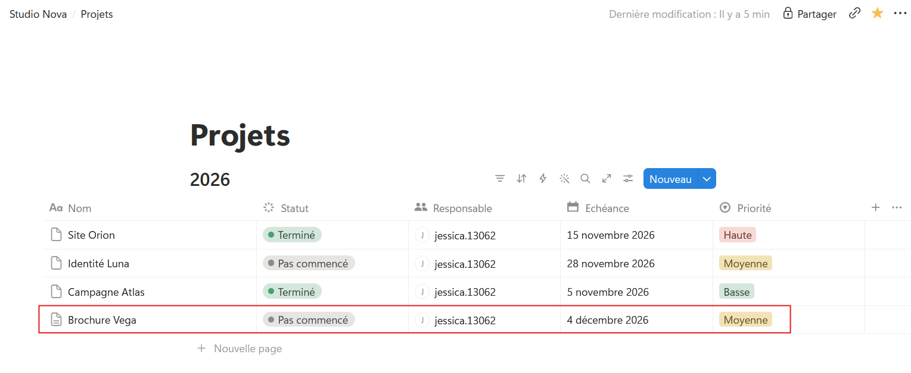
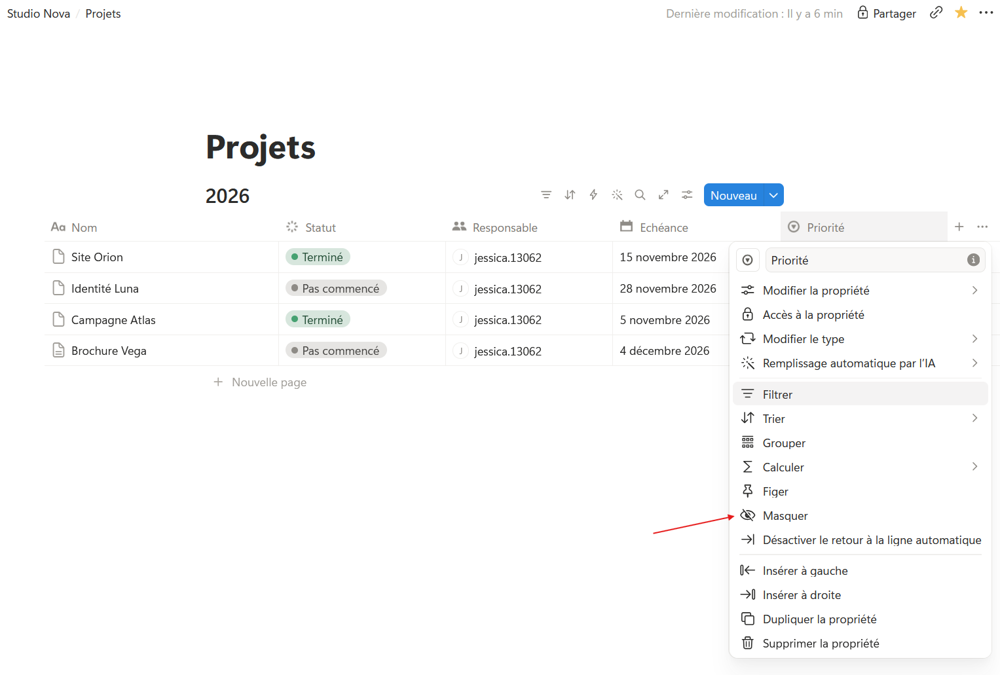

Ajouter, ouvrir, modifier
Étape 1 : comprendre
Une base vit : on y ajoute des projets, on change un statut, on corrige une date. Voici les gestes du quotidien.
- Ajouter une entrée : clique sur « + Nouvelle page » sous la dernière ligne, ou sur le bouton bleu « Nouveau » (New) en haut à droite de la base. Le bouton ouvre directement la nouvelle page.
- Modifier une propriété : clique dans la case, directement dans le tableau, et change la valeur. Pas besoin d'ouvrir la page.
- Ouvrir une entrée : bouton « Ouvrir » au survol du nom, pour écrire dans son contenu.
- Modifier une colonne : clique sur son nom pour la renommer, changer son type, la masquer ou la supprimer.
- Supprimer une entrée : clic droit sur la ligne, puis « Supprimer ». La page part dans la Corbeille.
Une précision sur masquer et supprimer une propriété. Masquer cache la colonne du tableau, mais les valeurs restent dans chaque page. Supprimer efface la propriété et toutes ses valeurs, dans toutes les entrées.
Une valeur se modifie dans la case ; une colonne se modifie en cliquant sur son nom.
Attention : changer le type d'une propriété peut faire perdre des informations. Par exemple, passer une colonne « Texte » en « Date » efface les valeurs que Notion ne comprend pas comme des dates. Vérifie avant de valider.
Une base qui vit
Voici la base « Projets ». La page « Site Orion » est déjà ouverte : sous ses propriétés, Emma a écrit un résumé et une checklist. Ferme-la, puis ouvre un autre projet.
Mettre à jour la base Projets
- Ouvre ta base « Projets ». Clique dans la case Statut de « Site Orion » et choisis « Terminé ».
- Clique sur « + Nouvelle page » sous la dernière ligne. Nomme le projet « Brochure Vega », statut « Pas commencé », échéance au 4 décembre, priorité Moyenne.

- Ouvre « Brochure Vega » avec le bouton « Ouvrir ». Sous les propriétés, écris : « Brochure de 8 pages pour le client Vega. »
- Ajoute une checklist de deux tâches : « Recevoir les textes du client » et « Proposer une mise en page ».
- Ferme la page. Clique sur le nom de la colonne « Priorité » et choisis « Masquer » (Hide) : la colonne disparaît du tableau.

- Ouvre de nouveau « Brochure Vega » : la priorité est toujours là, en haut de la page. Pour réafficher la colonne, ouvre le menu des réglages de la vue, en haut à droite de la base, puis « Visibilité des propriétés » (Property visibility).
Astuce : dans une page ouverte, tu passes d'une propriété à l'autre au clavier avec Tab. Pratique pour saisir plusieurs projets à la suite.
Étape 3 : vérifier
Objectif de la leçon
Tu sais maintenant faire vivre une base au quotidien : ajouter une entrée, modifier une valeur, masquer une colonne.
Choisis une réponse avant de valider.
Une valeur se modifie directement dans sa case, sans ouvrir la page ni toucher aux colonnes.